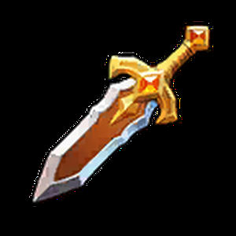
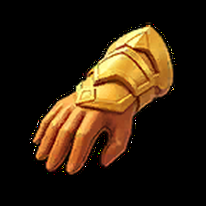
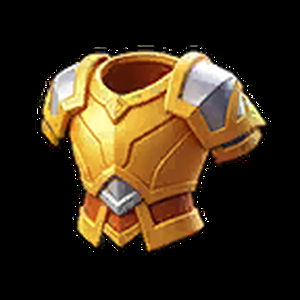
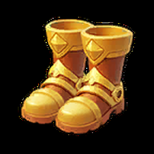

Co daje każda część wyposażenia?

MieczAtak · obrażenia
RękawiceAtak · odporność
ZbrojaŻycie · obrona
ButyŻycie · obronaKomu ulepszać co jako pierwsze?

Miecz → rękawice
Najpierw zwiększaj to, co pomaga zadawać obrażenia. Szczególnie opłacalne jest ulepszanie miecza głównej atakującej.

Zbroja → buty
Najważniejsze, by wytrzymali ataki i nie odsłonili tylnego szeregu zbyt wcześnie.

Przeżycie → dodatki
Wsparcie musi pozostawać w walce, żeby zdolności działały przez dłuższy czas. Zadbaj o obronę i życie.
Jak rozwijać wyposażenie UR?
Rozwijaj najważniejsze elementy etapami, zamiast rozdzielać zasoby równo na wszystkie części.
Zacznij od miecza UR głównej atakującej (np. Marleny). Następnie rozwijaj najważniejszą broń kolejnego atakującego oraz zbroję i buty pierwszego szeregu, zależnie od tego, czy brakuje Ci obrażeń, czy przeżywalności.
Czy warto rozwijać sprzęt SSR?
Główna inwestycja
To docelowe wyposażenie bohaterów, którzy zostają w podstawowej piątce. Rozwijaj je stopniowo, koncentrując zasoby na priorytetowych częściach.
Sprzęt przejściowy
Może być użyteczny, gdy nie masz jeszcze złotego odpowiednika. Miecz i rękawice SSR na poziomie 30 można zachować do walk z potworami.
Jeżeli planujesz wymianę na UR, oceniaj opłacalność dalszego ulepszania SSR. Najpierw doposaż tych pięciu bohaterów, którzy walczą najczęściej.
Dlaczego warto przekładać wyposażenie?
Gdy porównujesz dwóch bohaterów, daj im ten sam komplet wyposażenia i dopiero wtedy zestaw widoczną moc oraz raporty bitew. Inaczej nie wiesz, czy różnicę robi postać, czy po prostu mocniejszy miecz.
Największa liczba mocy nie zawsze oznacza większe obrażenia. Sprawdzaj faktyczny wynik oddziału w zbliżonych warunkach.